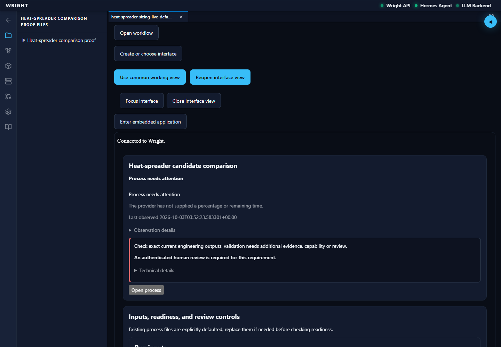
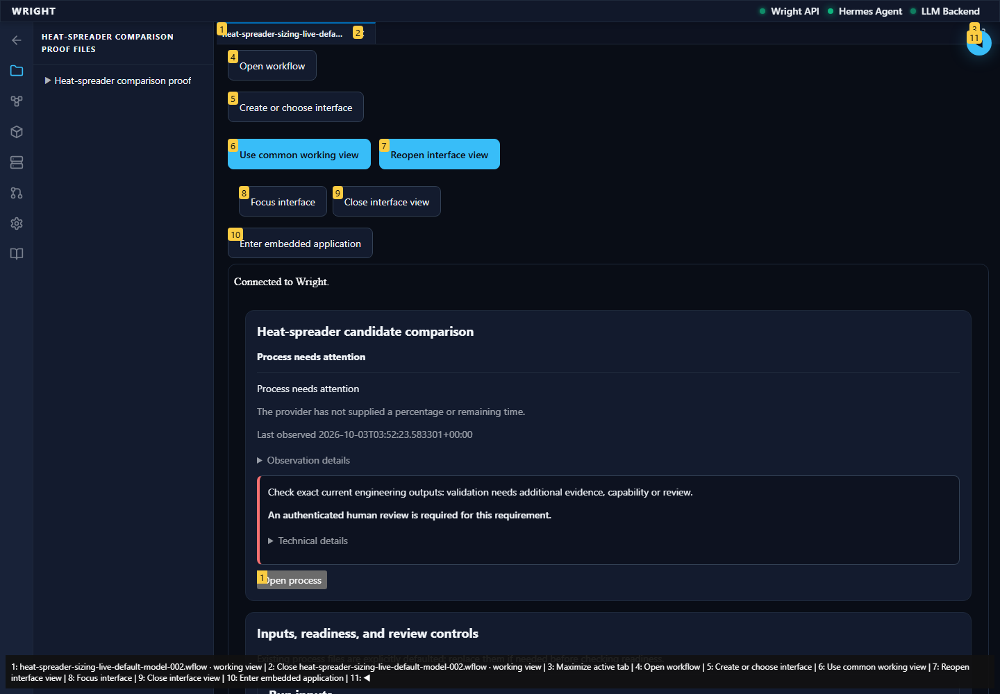
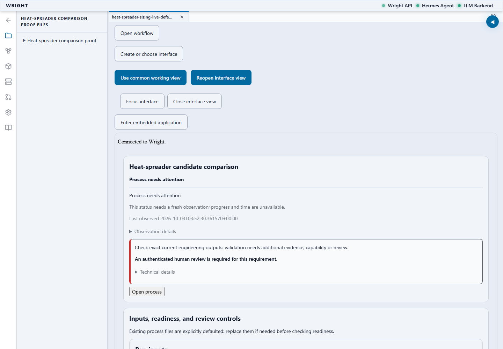
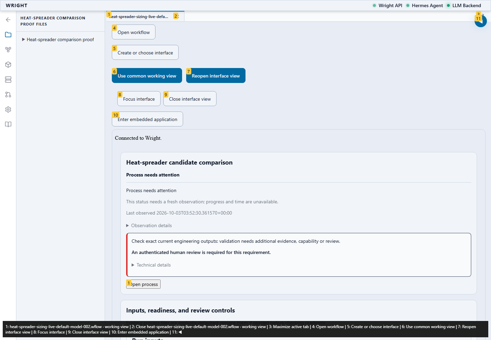
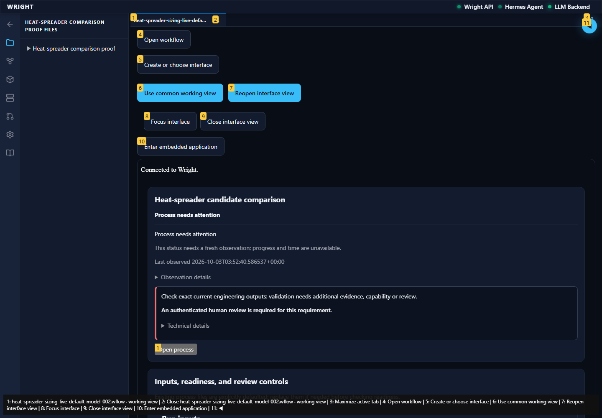
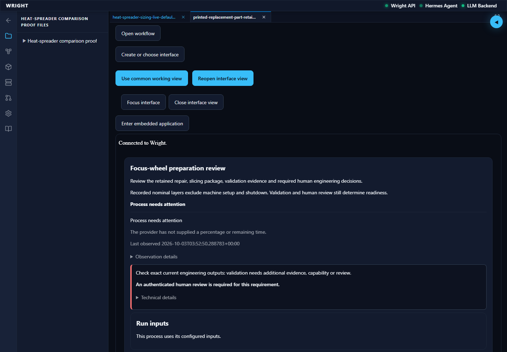
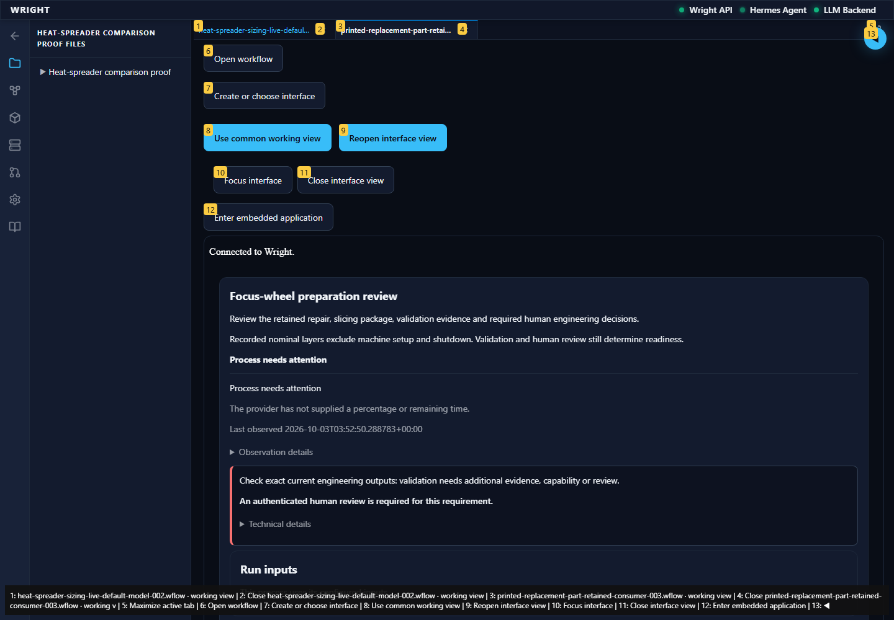
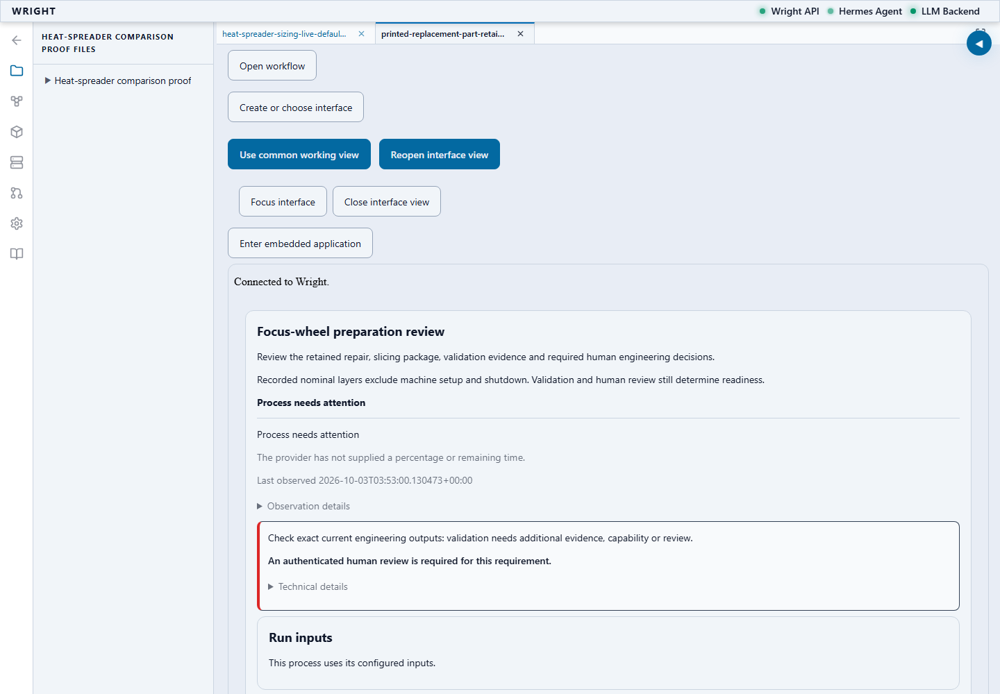
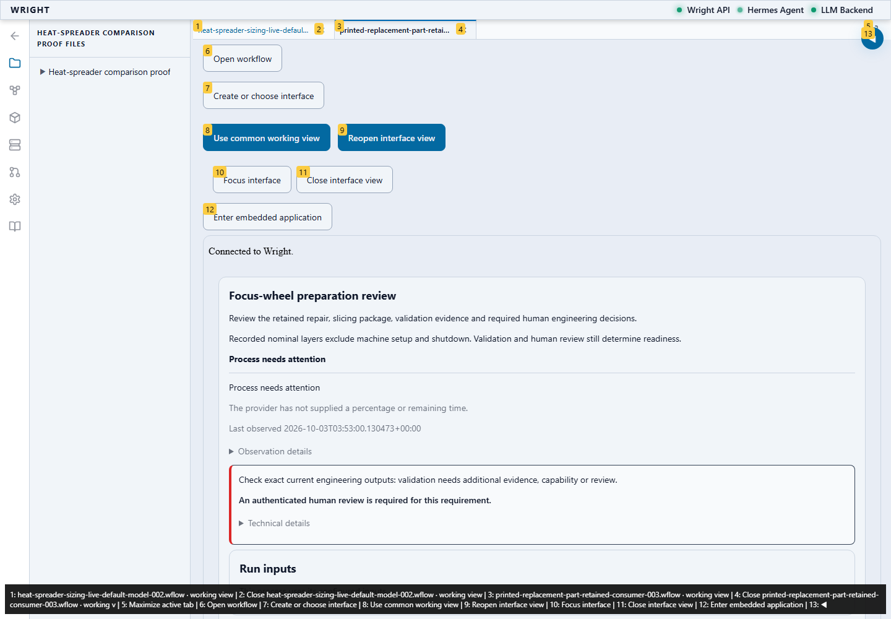

Actual settings controls and saved model-created interfaces; no process start, review or global preference save.
Status: blocked
The exact saved revision and engineering outputs are connected.
Expected: Exact saved revision and current results.
Actual: 18 exact results in the current working context.
raw 
annotated 
The saved isolated interface inherits Wright’s selected light theme.
Expected: Frame background/text theme tokens and color scheme match its parent.
Actual: {"parent":{"neutral":"#e8edf5","primary":"#0f172a","scheme":"light"},"child":{"neutral":"#e8edf5","primary":"#0f172a","scheme":"light"}}
raw 
annotated 
The same presentation reconnects after its frame document reloads.
Expected: Fresh frame handshake, same saved UI/run/results and selected light theme.
Actual: New context read and 18 exact result identities restored; theme retained.
Wright’s selected dark theme is restored without changing engineering work.
Expected: Exact dark parent/frame theme and unchanged outputs.
Actual: {"parent":{"neutral":"#090d16","primary":"#f1f5f9","scheme":"dark"},"child":{"neutral":"#090d16","primary":"#f1f5f9","scheme":"dark"}}
annotated 
The exact saved revision and engineering outputs are connected.
Expected: Exact saved revision and current results.
Actual: 19 exact results in the current working context.
raw 
annotated 
The first unexpected interface behavior is preserved.
Expected: Parent and saved interface have the same selected theme and exact run context.
Actual: expect(received).toMatchObject(expected) - Expected - 3 + Received + 3 Object { "read_only": false, - "revision_id": "revision-5d5d6defda104980a2455c7ddc95e687", - "run_id": "bebf24bcdec44058a46371fa05d7cd83", - "ui_id": "ui-ce377446f6d44705846a32f7c3eb94b2", + "revision_id": "revision-9c8c8b164ea34a9ba65910567b41b170", + "run_id": "67abaa021ee44972a94e3c9cbaa3dbbe", + "ui_id": "ui-8858f2ec2bc24bc588ce5042626503ab", }
raw 
annotated 